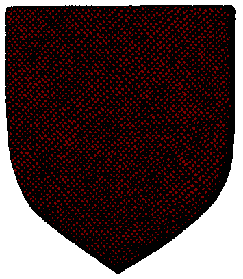

|

|
Das schwarze Brett
|
|
| Übersicht,
Anschläge und Stammtisch (RPG) |
|
Reich Baroque und Urvan
|
Felaria Mendalon
.GIF) |
werter Baene ,
wenn ihr euch bemüht die gesetze urvans zu befolgen , hat das konvent dazu sicher keinen anlass .
Felaria Mendalon,
Priesterin im Dienste des einzig wahren Glaubens an Urvan
Verkünderin des Glaubens an Urvan
Zur 14. Stunde am 16.Erntemond im Jahre 416 |
27.06.04 21:13
 |
|
| Baene (RIP) |
Werte Felaria Mendalon,
in meinen Augen habe ich gegen kein Gesetz Urvans verstoßen, sondern in dem durch Urvan gebotenen Rahmen gehandelt und für das Recht gesorgt. Doch was ist wenn meine Sicht falsch sein sollte? Ich denke über mein Handeln kann nur der Konvent urteilen, der Urvans Wille hier auf der Scherbe umsetzt und für ihn urteilt.
Grüsse,
Baene
Baene
Zur 14. Stunde am 16.Erntemond im Jahre 416 |
27.06.04 21:15
|
|
| Bogan Feuerherz (RIP) |
Nun dan hat wohl jede Kriegstreibe Nation gegend Urvan verstossen ... wobei ... wieso macht Urvan Gesetze!? Urvan soltle dafür srogen das diese eingehalten werden!
Und was ich mit meiner Frau mache geht euch herzlichst wenig an ...
Sir Bogan Feuerherz,
Anführer der glorreichen Nation "Sturmreiter",
Ehemann der reizenden Leonida Feuerherz
Zur 15. Stunde am 16.Erntemond im Jahre 416 |
27.06.04 21:19
|
|
| Leonida Feuerherz (RIP) |
Werte Felaria Mendalon,
ich denke mal nicht das ihr euch darüber Sorgen machen müsst ob es meinem Ehemann an Zuwendung mangelt,dieses steht hier auch wohl nicht zur Debatte.
MfG
Leonida Feuerherz,
Ehefrau des ehrenwerten Bogan Feuerherz
Zur 17. Stunde am 16.Erntemond im Jahre 416 |
27.06.04 21:48
|
|
| Marian Saptecai (RIP) |
Werter Bogan,
was auch immer euch geritten hat, aber die ansichten die ihr hier vertretet sind völligst haltlos. die baroques schränken mit ihrer plünderei und dem raubmord die freiheit und die persönliche entwicklung ihrer opfer ein. die ist in keinem fall eine urvangefällige vorgehensweise.
Marian Saptecai,
Priester im Dienste des einzig wahren Glaubens an Urvan
Zur 17. Stunde am 16.Erntemond im Jahre 416 |
27.06.04 21:55
|
|
| Bogan Feuerherz (RIP) |
Urvan ist nicht dazu da um das wohl anderer zu sorgen, sondern Gesetze einzuhalten. SO hab ich es aus den Büchern der grossen Bilbiotheken gelesen. Und Alucard und seine Sippe halten sich sehrwohl an die Gesetze ihrer Nation!
Sir Bogan Feuerherz,
Anführer der glorreichen Nation "Sturmreiter",
Ehemann der reizenden Leonida Feuerherz
Zur 18. Stunde am 16.Erntemond im Jahre 416 |
27.06.04 21:58
|
|
Tilion
  |
Bogan meint das alles ironisch. Nur ein weiterer Versuch, die Arbeit der Konvente in´s Lächerliche zu ziehen.
Aber wie wir alle sehen können, ist dieser Herr Bogan sowas von erleuchtet, da können wir uns alle eine Scheibe von abschneiden.
Tilion,
Kardinal im Dienste des einzig wahren Glaubens an Urvan
Zur 19. Stunde am 16.Erntemond im Jahre 416 |
27.06.04 22:14
|
|
| Bogan Feuerherz (RIP) |
Das sagt ein Kardinal Urvans mit Bogen und magischen Pfeilen? Wenn das keine Ironie ist ....
Sir Bogan Feuerherz,
Anführer der glorreichen Nation "Sturmreiter",
Ehemann der reizenden Leonida Feuerherz
Zur 20. Stunde am 16.Erntemond im Jahre 416 |
27.06.04 22:36
|
|
| Agradas Selar (RIP) |
Ich finde es wirklich amüsant wie ein Atheist der Verkünderin des Glaubens von Urvan erzählen will was urvangefällig ist und was nicht.
Mir scheint das Sir Bogan Feuerherz wirklich nicht begreifen kann für was die Götter und ihre Gesetze stehen. Das würde auch erklären wieso er noch zu keinem gefunden hat.
Der versuch durch Wortklauberei den Sinn der Gesetze zu verdrehen und dieser Plündererbande urvangefälligkeit anzudichten muß aus völligem Unverständnis der Gesetze entstanden sein, oder er versucht einfach nur den Kult und seine Anhänger zu provozieren.
Beides zeugt wirklich nicht von hohem Niveau.
gez.
Sir Agradas Selar
Zur 21. Stunde am 16.Erntemond im Jahre 416 |
27.06.04 22:40
|
|
| Tjalf Firestorm (RIP) |
Mir war schon immer klar, dass Ihr einen an der Klatsche habt Bogan.
Verhalten wie das der Baroques sollte von den Sieben auf´s entschiedenste verurteilt werden! Demnächst rennen wir dann alle mordend und plündert über die Scherbe?!
Tjalf Firestorm
Zur 21. Stunde am 16.Erntemond im Jahre 416 |
27.06.04 22:43
|
|
| Andragon Elrohir (RIP) |
Ich las gerade, dass Alucard Baroque meine er verletze keine Gesetze Urvans. Dann frage ich mich, ob Eure Gesetztafel in der Mitte abgebrochen ist, oder ob Ihr folgendes Gesetz einfach überlesen habt:
4.Du sollst Arbeit und Eigentum anderer achten und nicht durch Raub, Mord, Plünderei und Diebstahl deinen Lebensunterhalt fristen.
gez.
Andragon Elrohir,
Priester im Dienste des einzig wahren Glaubens an Urvan,
Ehemann der reizenden Dorian Gray
Zur 21. Stunde am 16.Erntemond im Jahre 416 |
27.06.04 22:44
|
|
| Bogan Feuerherz (RIP) |
dies habe ich bereits vorher beantwortet ... ihr sollt vielleicht doch den ganzen anschlag machen
und seit wan stell en die götter gesetze auf? gesetze sind etwas weltliches! urvan soll as gott der gerechtigkeit nur dafür sorgen das diese auch einbehalten werden, keine gesetze erscahffen ... und genau dies wird im Reich Baroque vorbildlich gemacht
Sir Bogan Feuerherz,
Anführer der glorreichen Nation "Sturmreiter",
Ehemann der reizenden Leonida Feuerherz
Zur 22. Stunde am 16.Erntemond im Jahre 416 |
27.06.04 22:54
|
|
| Darken Rahl (RIP) |
Nunja sinnlose Disskusionen vom werten Bogan sollten doch mittlerweile ausreichend angezettelt worden sein.
Sucht euch doch einmal ein neues, nicht ganz so vorhersehbares, nicht abgedroschenes Thema werter Bogan, auf das ihre eure ganzen energien richten könnt.
Sir Darken Rahl
Zur 22. Stunde am 16.Erntemond im Jahre 416 |
27.06.04 22:57
|
|
| Bogan Feuerherz (RIP) |
Sinnlose Diskusion, Philosophie ... ich denke über alles nach, speziel Dinge die dem Gleichgewicht dienen ...
Sir Bogan Feuerherz,
Anführer der glorreichen Nation "Sturmreiter",
Ehemann der reizenden Leonida Feuerherz
Zur 23. Stunde am 16.Erntemond im Jahre 416 |
27.06.04 23:09
|
|
| Knuffel Flammenhaar (RIP) |
Das heisst also, erst plündere und raube ich, dann baue ich von dem erbeuteten Geld eine Stadt und Produktionsbetriebe auf. Und das ganze ist noch Urvan gefällig?
Werter Bogan ihr verdreht da was, erst war die Plünderei, dann die Gebäude.
Also der ganze Reichtum der Braoques besteht aus Plündergut.
Sir Knuffel,
Praetor Peregrinus ALVERANS
Zur 23. Stunde am 16.Erntemond im Jahre 416 |
27.06.04 23:14
|
|
| Andragon Elrohir (RIP) |
Bogan, vielleicht solltet Ihr erst die Lehren der Götter und die Konvente studieren, bevor Ihr vorschnell urteilt.
Priester eines Gottes brachten eine lange Zeit des Studiums hinter sich, in der sie sich immer mehr Ihrem Gott nähern, bevor sie diesen hohen Rang in einem Konvent erlangen.
Diese Nähe zu unserem Herren lässt darauf schließen, dass unsere Gedanken, also der Priester Meinung, durch die Führung des Gottes entstanden sind.
Somit sind Gesetze die der Konvent aufstellt als Gesetze des Gottes zu verstehen und zu achten.
Andragon Elrohir,
Priester im Dienste des einzig wahren Glaubens an Urvan,
Ehemann der reizenden Dorian Gray
Zur 24. Stunde am 16.Erntemond im Jahre 416 |
27.06.04 23:27
|
|
| Lómiowyn Glyndil (RIP) |
Naja, die Nation der Familie Baroque hat sich das Morden und Plündern auf die Fahnen geschrieben,
genauso wie den angeblichen Glauben an Urvan.
Wo der Konvent Urvans scheinbar nichts dran änder mag.
Ich denke Bogan Feuerherz meint nicht exakt das, was er anfangs sagte, sondern wollte nur auf einen gewissen Mißstand aufmerksam machen.
Ich frage mich gerade ob der allseitsbekannte Plünderer Takehiko immer noch im Urvankonvent weilt...
Lómiowyn Glyndil,
Priester im Dienste des einzig wahren Glaubens an Pheron
Zur 1. Stunde am 17.Erntemond im Jahre 416 |
27.06.04 23:39
|
|
| Bogan Feuerherz (RIP) |
Wäre es mir nicht zuwider das vieel der Gesetze das gleichgewicht stören, so gebt mir nur wenige Tage und ich bin im Konvent. Den eurem Gott reicht es wenn ich nur genug Orks töte wie es mir scheint ...
Und welche Gesetze ich wie verstehe und wie achte ist mir überlassen. Den den Glauben lass ich mir zu allerletzt aufzwingen, davor steht jedoch der Tod in der Liste ...
Sir Bogan Feuerherz,
Anführer der glorreichen Nation "Sturmreiter",
Ehemann der reizenden Leonida Feuerherz
Zur 1. Stunde am 17.Erntemond im Jahre 416 |
27.06.04 23:39
|
|
| Andragon Elrohir (RIP) |
Nein.. Tillion weilt nicht mehr unter den Urvanern. Man sieht also, die Treueprüfungen alleine reichen nicht aus, um einem Konvent anzugehören, ein Irrglaube Bogan.
Andragon Elrohir,
Priester im Dienste des einzig wahren Glaubens an Urvan,
Ehemann der reizenden Dorian Gray
Zur 2. Stunde am 17.Erntemond im Jahre 416 |
28.06.04 0:01
|
|
Tilion
|
Werter Lómiowyn, Takehiko weilt nicht mehr im Urvan-Konvent. Er hatte die Gesetze akzeptiert und freiwillig den Konvent verlassen.
eine kurze Erklärung, Bogan zu meinem Portait:
Dies hatte ein Maler angefertig, kurz nachdem ich meine Bewunderung über die Treffsicherheit und Gewandheit der Jäger im Umgang mit Pfeil und Bogen zum Ausdruck gebracht hatte. Ich persönlich kämpfe (bis jetzt) auch nur im Nahkampf. Sehr wohl halte ich das Bogenschießen als eine achtenwerte Kampfkunst. Dies bezieht sich natürlich nicht auf das urvan-gefällige Duell, wo man dem Gegner direkt in die Augen sehen soll, und ihn im Nahkampf zu bezwingen sucht.
Das Licht an meinen Pfeilen soll symbolisieren, dass Urvan auch im Bogenschießen durchaus Beistand gewährt.
Tilion,
Kardinal im Dienste des einzig wahren Glaubens an Urvan
Zur 3. Stunde am 17.Erntemond im Jahre 416 |
28.06.04 0:05
|
|
Tilion
|
Ansonsten möchte ich die Öffentlichkeit dafür um Verständnis bitten, dass der Urvan-Konvent auf die billige Provokation der Plünderernation Baroque, Urvan als Nationsglaube einzusetzen, nicht mit Aktionismus reagiert.
Tilion,
Kardinal im Dienste des einzig wahren Glaubens an Urvan
Zur 3. Stunde am 17.Erntemond im Jahre 416 |
28.06.04 0:09
|
|
| Cronos Sturmwind (RIP) |
werter Bogan Feuerherz, ich stimme euch zu, die Baroque haben sich nicht dahingehend schuldig geacht, das sie gegen gesetzte verstoßen haben. Sie haben jedoch gegen das 4. gebot Urvans verstoßen, denn es ist keinesfalls urvangefällig, Unschuldige zu ermorden und auszuplündern...
Auch wenn ihr sagt, dies seien ihre Gesetzte, so verstoßen sie dennoch gegen die Gebote Urvans, welche höher als Gesetzte stehen...
Cronos, Sohn des Talos,
Priester im Dienste des einzig wahren Glaubens an Urvan,
Blutsbruder des ehrenwerten Irian von Tacheless
Zur 13. Stunde am 18.Erntemond im Jahre 416 |
28.06.04 8:01
|
|
| Alucard Baroque (RIP) |
Es kann genau so gut die erste KE zuerst an mich gekommen sein, bevor ich plünderte, dann übte ich Rache aus und weitere folgten... So wäre ich die ganze Zeit im Recht... Und niemand kann jetzt dagegen etwas sagen, da er keine Beweise hat und es außerdem lange Zeit zurückliegt...
Freiherr Alucard Baroque,
Vorsteher von Baroque`s Peak,
Anführer der glorreichen Nation "Reich Baroque"
Zur 24. Stunde am 18.Erntemond im Jahre 416 |
28.06.04 10:41
|
|
| Gilead (RIP) |
Dann will ich wohl im Namen der Nation Die Gefährten, dessen Stimme ich Kraft des mir von meinem Nationsführer verliehenen Amtes bin, wiedersprechen !
Das Reich Baroque betrat unser Land unaufgefordert und plünderte unsere Gebäude ohne das es eine Kriegserklärung gegen ein Mitglied der Sippe unsererseits gegeben hätte.
Sich darauf zu stützen, dass es niemand beweisen kann, weil es schon zu lange her ist halte ich für eine sehr kurzsichtige Betrachtung.
Ich darf wohl mit Recht behaupten, dass ich niemals öffentlich wissentlich die Unwahrheit gesprochen habe.
Und ich gebe mein Wort als Vertreter meiner Nation, als auch als Ehrenmann, dass meinen Informationen nach ( und ich denke dass ich wohl am besten darüber informiert bin ob es eine Kriegserklärung vor der Plünderung gab oder nicht) keine Kriegserkärung eines Nationsmitglieds der Gefährten gegen ein Mitglied des Reichs Baroque gab.
Die Plünderungen erfolgten somit wohl unprovoziert und sind demnach wohl auch nicht "rechtens" !
Sir Gilead,
Vorsteher von Tlâr Catež,
hoher Konsul der glorreichen Nation Die Gefährten
Zur 11. Stunde am 19.Erntemond im Jahre 416 |
28.06.04 13:13
|
|
| Alucard Baroque (RIP) |
Und wenn ich sage, es gab vorher eine KE ? Tja, kann man so oder anders nehmen... Spielt doch keine Rolle, sicher nachweisen kann man es nicht...
Freiherr Alucard Baroque,
Vorsteher von Baroque`s Peak,
Anführer der glorreichen Nation "Reich Baroque"
Zur 22. Stunde am 20.Erntemond im Jahre 416 |
28.06.04 21:24
|
|
| Gilead (RIP) |
Die Frage ist wohl eher, wer von uns beiden glaubwürdiger ist ...
Und bei dem was Ihr hir so von Euch gebt mein ehrloser Freiherr, wird dem aufmerksamen Leser Eurer Anschläge der einzig logische Schluß wohl nicht allzu schwer fallen.
Im weiteren könnt Ihr ja noch nicht einmal mit Eurer Ehre für die Richtigkeit Eurer Behauptung bürgen, da Ihr, wie der genigte Lesr wohl auch schon festgestellt haben muss keine Ehre besitzt.
Und um es noch ein weiteres mal zu sagen, Ihr lehnt zudem noch jede friedliche Lösung ab, es sei denn wir würden ohne ein Zeichen guten Willens von Euch aus reiner Wohltätigkeit, oder wie Ihr es dann wohl nennen würdet, aus reiner Angst, die durch Euer Handeln gerechtfertigte Kriegserklärung zurückziehen.
Wer nicht bereit ist die Verantwortung für seine Taten auf sich zu nehmen und noch nicht einmal willens ist eine symbolische Wiedergutmachung für die, durch unprovozierte und von reiner Bosheit inspirierten Übergriffe verursachten Schäden zu leisten, ist wohl auch in den Augen des kritischsten Lesers kein ehrenhafter Mann.
Ich habe Eure Haltung akzeptiert und werde meine Schlußfolgerungen und meine Handlungsweise danach richten, jedoch gebietet mir die Ehrfurcht gegenüber den Gesetzen der Götter meine Stimme zu erheben, wenn hier solch frevelhafte Lügen verbreitet werden.
Im weiteren wird es sicherlich in einem verstaubten Archiv auf der Scherbe noch Aufzeichnungen üder diese Zeit geben die man zu Rate ziehen könnte !
Gruß
Sir Gilead,
Vorsteher von Tlâr Catež,
hoher Konsul der glorreichen Nation Die Gefährten
Zur 9. Stunde am 21.Erntemond im Jahre 416 |
28.06.04 23:55
|
|
| Alucard Baroque (RIP) |
Da sieht man, was du für ein Trottel bist, Gilead... Ich habe niemals gesagt, dass ich die Taten von mir weise und Lügen verbreite ich auch keine, ich habe lediglich eine Auswahl vorgestellt...
Du laberst und laberst, es interessiert mich aber nicht und jeden anderen genau so wenig, denn du wirst niemals etwas damit erreichen...
*lacht*
Freiherr Alucard Baroque,
Vorsteher von Baroque`s Peak,
Anführer der glorreichen Nation "Reich Baroque"
Zur 8. Stunde am 23.Erntemond im Jahre 416 |
29.06.04 11:03
|
|
| Gilead (RIP) |
Wenn es Euch nicht interessiert, warum rechtfertigt Ihr Euch dann ?
Und wenn ich auch nur einen Einzigen, der von Eurem Treiben bisher noch nichts wußte aufgeklärt habe, oder auch nur ein Einziger jetzt etwas kritisch gegenüber Euch und den Euren ist, dann habe ich etwas damit erreicht !
Ebenfalls dadurch, dass Eure Taten nicht in Vergessenheit geraten habe ich etwas erreicht.
Euch mußte doch klar sein, dass Eure Taten nicht ohne Folgen bleiben würden, und dies hier sind wohl die harmlosesten der Reaktionen die auf Eure Taten erfolgen.
Und niemand kann mich daran hindern die Wahrheit über Euch und die Euren zu verbreiten, auf dass sie jedem eine Warnung ist und sich die Unbedachten vor Euch schützen können !
Sir Gilead,
Vorsteher von Tlâr Catež,
hoher Konsul der glorreichen Nation Die Gefährten
Zur 18. Stunde am 23.Erntemond im Jahre 416 |
29.06.04 13:13
|
|
| Bogan Feuerherz (RIP) |
Selbst wenn der Freiherr Alucard, früher einen Angriff ohne Aggresor gestartet hat, so greift er nun nur noch Aggresoren gegen ihn an, das dabei unschuldige des öfteren zum Opfern fallen zeigt jeder Krieg. Und das er dem Plündern selbst nicht mehr als Lebensunterhalt hat zeigt das er Produktionsstätten hat!
Sir Bogan Feuerherz,
Anführer der glorreichen Nation "Sturmreiter",
Ehemann der reizenden Leonida Feuerherz
Zur 21. Stunde am 23.Erntemond im Jahre 416 |
29.06.04 14:01
|
|
| Gilead (RIP) |
Ihr wollt also seine Haltung, angerichtete Schäden nicht wiederguitzumachen, und sei es auch nur durch den symbolischen guten Willen, verteidigen ?
Ihr wollt also behaupten, nur weil dieser elende Verbrecher und Ehrlose samt seiner Sippe jetzt einer eigenen Produktion nachgeht ist er von seiner Verantwortung bereits begangener Verbrechen befreit ?
Mein gedächtniß mag zwar nicht so gut und weitreichend sein wie das der Götter, deren Strafe ihn gewiß noch erwartet, jedoch vergesse ich auch nicht so schnell !
Sir Gilead,
Vorsteher von Tlâr Catež,
hoher Konsul der glorreichen Nation Die Gefährten
Zur 17. Stunde am 24.Erntemond im Jahre 416 |
29.06.04 18:38
|
|
| Patriarch der III. (RIP) |
Wie unsere werte Verkünderin des Glaubens, Felaria Mendalon, bereits sagte, Urvan und Raub(mord) passen nicht zusammen.
Die Baroques geben zwar vor an Urvan zu glauben doch handeln sie nicht in seinem Sinne, haben seine Lehren nicht verinnerlich - im Gegensatz zu den wahrhaft Gläubigen.
Sir Patriarch der III.,
Priester im Dienste des einzig wahren Glaubens an Urvan,
Anführer der glorreichen Nation "Kooperative freier Händler"
Zur 8. Stunde am 25.Erntemond im Jahre 416 |
29.06.04 22:07
|
|
| Bogan Feuerherz (RIP) |
Sie haben sich an ihre Gesetze gehalten, dies ist mehr als Urvangefällig, doch anstatt ihnen die annähernde Möglichkeit auf ein nun friedliches Leben zu geben werden sie überfallen, ja sogar gebäude in Brand gesteckt und vernichtet. Es fragt sich nun wirklich was wohl schlimmer sein mag?
Sir Bogan Feuerherz,
Anführer der glorreichen Nation "Sturmreiter",
Ehemann der reizenden Leonida Feuerherz
Zur 13. Stunde am 27.Erntemond im Jahre 416 |
30.06.04 10:34
|
|
| Gilead (RIP) |
Falls Ihr meinen Ausführungen nicht mit der nötigen Aufmersamkeit gefolgt seid, Bogan Feuerherz, die Baroques haben unser Angebot auf Frieden kategorisch abgelehnt, insofern haben sie wohl eher die gegebene Möglichkeit auf ein friedliches Leben mit Füßen getreten und uns ins Gesicht gepuckt !
Aber wie mir scheint seit Ihr ein großer Sympathiesant dieser Sippe, oder vielleicht schon ein inoffizielles Mitglied ?
Das jedenfalls liegt nach Euren Äußerungen hier recht nahe ...
Sir Gilead,
Vorsteher von Tlâr Catež,
hoher Konsul der glorreichen Nation Die Gefährten
Zur 14. Stunde am 27.Erntemond im Jahre 416 |
30.06.04 10:44
|
|
| Alucard Baroque (RIP) |
Unsere Familie hat keine anderen Mitglieder, außer die, die unseren Namen tragen...
Freiherr Alucard Baroque,
Vorsteher von Baroque`s Peak,
Anführer der glorreichen Nation "Reich Baroque"
Zur 15. Stunde am 27.Erntemond im Jahre 416 |
30.06.04 10:55
|
|
| Louison Dírnaith (RIP) |
Bogan Feuerherz - Ihr solltet euren Kopf wieder aus dem Allerwertesten von Alucard Baroque nehmen. Ihr seht scheinbar nicht mehr die Realität auf Scherben.
Markgraf Louison,
Vorsteher von Sala en Orod,
Anführer der glorreichen Nation "Amber",
Verlobter der reizenden CeNedra Arafhen
Zur 14. Stunde am 28.Erntemond im Jahre 416 |
30.06.04 16:22
|
|
Lao Tse
 |
Wer den Baroques und ihren krankhaften Prinzipien gefällig ist, der sollte wohl besser auch ihren Namen tragen, damit es mir in Zukunft leichter fällt, dass Pack und seine Verbündeten auszurotten!
Sir Nehro,
Vorsteher von Naphtha,
Erzkämmerer der Allianz
Zur 17. Stunde am 28.Erntemond im Jahre 416 |
30.06.04 17:02
|
|
| Vorondil Coldleaf (RIP) |
Bogan wurde meiner meinung zu recht zum Ketzer erklärt
Sir Vorondil Coldleaf,
Kämpfer der gerechten Sache
Zur 18. Stunde am 28.Erntemond im Jahre 416 |
30.06.04 17:10
|
|
| Bogan Feuerherz (RIP) |
Nun mir scheint ihr habt ein wenig giftige Pilze erwischt, diese Aussagen haben aber wirklich rein gar nichts mit Pheron und meiner Aussage über Muradjanian zu tun. Aber was erwartet man schon von Euch Allwissenden.
Sir Bogan Feuerherz,
Anführer der glorreichen Nation "Sturmreiter",
Ehemann der reizenden Leonida Feuerherz
Zur 1. Stunde am 29.Erntemond im Jahre 416 |
30.06.04 18:57
|
|
| Gilead (RIP) |
Darf ich Euch, Bogan Feuerherz, vielleicht mal darum bitten Eure Beziehungen zu den baroques offenzulegen und uns über Eure Motivation und die Beweggründe Eures Angagments im Sinne der Baroques aufzuklären ?
Es interessiert mich nämlich wirklich sehr, wie man solch frevelhafte Taten verteidigen und solche Handlungsweisen gut heissen kann.
Gruß
Sir Gilead,
Vorsteher von Tlâr Catež,
hoher Konsul der glorreichen Nation Die Gefährten
Zur 4. Stunde am 29.Erntemond im Jahre 416 |
30.06.04 19:37
|
|
| Uxxor (RIP) |
So wie ich das verstehe heißt Bogan die Taten der Baroques nicht gut , sie sind halt nur sehr Urvangefällig. Dies ist ohne jede ethische Wertung ihrer Taten geschehen sonder bezieht sich nur auf ihren Glauben.
Er führt dem Urvan Konvent nur vor Augen, dass wenn sie versuchen ihre Handlungsweise nur durch ihren Gott und nicht durch gesunden Verstand zu erklären sie kein deut besser sind als diese Sippe.
Das Leben nach Urvans "Gesetz" läßt sich nun mal sehr vielseitig auslegen.......
Der nur an die Mutter Gaia glaubende
Uxxor der Schmied
Sir Uxxor
Zur 8. Stunde am 29.Erntemond im Jahre 416 |
30.06.04 20:32
|
|
| Vorondil Coldleaf (RIP) |
nunja meiner meinung nach verstoßen sie gegen das 4. gesetz urvans
4.Du sollst Arbeit und Eigentum anderer achten und nicht durch Raub, Mord, Plünderei und Diebstahl deinen Lebensunterhalt fristen.
Sir Vorondil Coldleaf,
Kämpfer der gerechten Sache
Zur 9. Stunde am 29.Erntemond im Jahre 416 |
30.06.04 20:50
|
|
| Bogan Feuerherz (RIP) |
dieser punkt 4 wurde vorher schon 3 mal wiederlegt ... mittlerweile ist er hinfällig, den durch die voreiligkeit einiger wurden sie ihrer produktion beraubt und um zu überleben bleibt ihnen keine wahl rückfällig zu werden, war das im sinne urvans?
aber es war wenigstens ein schritt in richtugn des gleichgewichts!
Sir Bogan Feuerherz,
Anführer der glorreichen Nation "Sturmreiter",
Ehemann der reizenden Leonida Feuerherz
Zur 6. Stunde am 32.Erntemond im Jahre 416 |
01.07.04 12:47
|
|
| Hugh (RIP) |
Vielleicht sollten sie es mal mit Wiedergutmachung versuchen ?
Aber das ist ja wohl scheinbar zu langwierig und unbequem.
Hugh
Zur 9. Stunde am 32.Erntemond im Jahre 416 |
01.07.04 13:37
|
|
| Gilead (RIP) |
Haltet es wie Ihr wollt,
Plünderei ist ein Unrecht das über den Gesetzen der 7 steht, Plünderei und Diebstahl ist ein ein Unrecht an der Großen mutter Gaia, die nach Ihrem Willen schenkt oder nicht schenkt !
Der leichte Weg ist immer der falsche Weg, denn wahrer Lohn wird nur für wahre und ehrliche Arbeit gewährt !
Sir Gilead,
Vorsteher von Tlâr Catež,
hoher Konsul der glorreichen Nation Die Gefährten
Zur 10. Stunde am 32.Erntemond im Jahre 416 |
01.07.04 13:44
|
|
Übersicht,
Anschläge und Stammtisch (RPG)
|
|
|
|
.GIF)